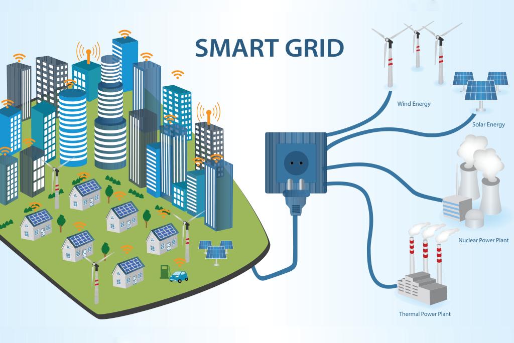
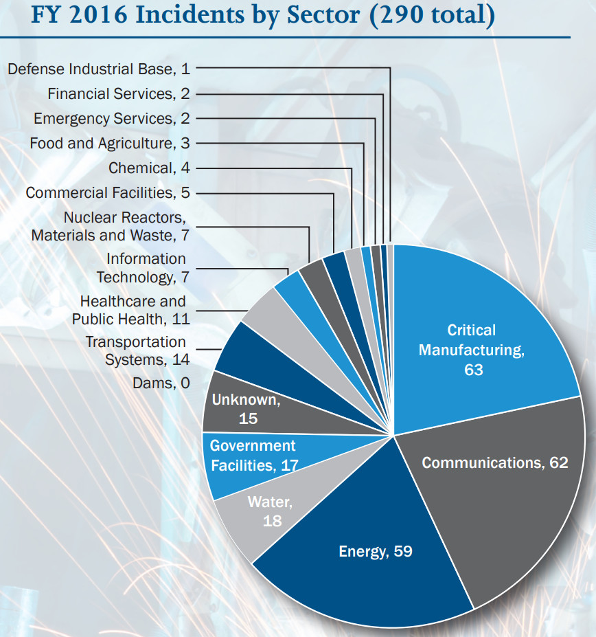
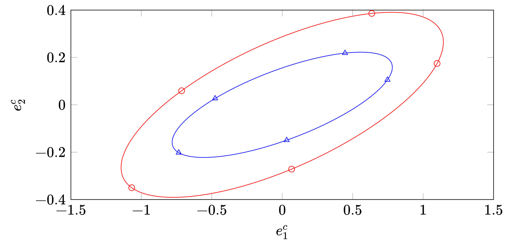
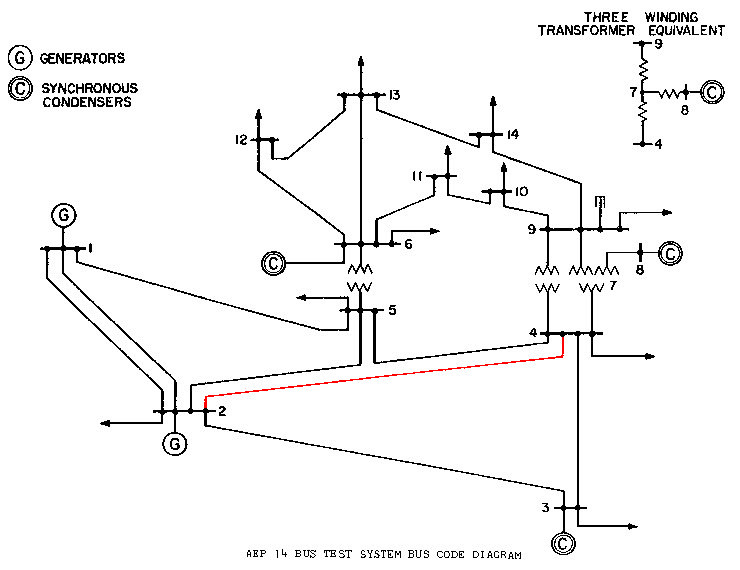

A Personal Take on Cyber-Physical Systems
Introduction
Definition of Cyber-Physical System

CPSs refer to the next generation of engineered systems that require tight integration of computing, communication, and control technologies to achieve stability, performance, reliability, robustness, and efficiency in dealing with physical systems of many application domains.
[Kumar], Proceedings of the IEEE, 2012
Applications

Cyber-Physical-Human Energy System
Complex interaction between humans, HVAC and grid. [Guan2010], [Jia2018]
Convergence of Computation and Control
- Cyber Space
- Physical Space
\[\dot{x} = f(x)\]
1948: The term “Cybernetics” was coined by Norbert Wiener.

- 1970s: Real time system
- 1990s: Hybrid system
- 2006: The term “Cyber-Physical System” was coined by NSF.

Convergence of Communication and Control
- 1971: ALOHAnet, first public wireless packet data network
- 1997: IEEE 802.11 (Wifi) was introduced
- 1997: Smart Dust Project proposed by researchers from UCB


- 1999: The term Internet of Things was invented.
- 2000: Panel on Future Directions in Control, Dynamics, and Systems [Murray2003]
Networks of sensory or actuator nodes with computational capabilities, connected wirelessly or by wires, can form an orchestra which controls our physical environment.
Many-Sidedness of CPS
Simplified Diagram of Autonomous Car
Networked Control System
Definition of Networked Control System
Networked control systems are spatially distributed systems in which the communication between sensors, actuators, and controllers occurs through a shared band-limited digital communication network.
[Zhang2020], Journal of Automatica Sinica
Diagram of Networked Control System
- Control over Networks:
- Communication is imperfect: quantization, delay, packet drops
- Communication is expensive: offline scheduling, event-based scheduling
- Multiple participants and local information: multi-agent system
- Control of Networks
Estimation and Control over Lossy Channels
Estimation over Lossy Channels
- Problem proposed by Sinopoli et al. [Sinopoli2004]
- System model:
\[x_{t+1} = A x_t + w_t,\,y_t = C x_t + v_t\]
- Erasure channel model:
\[\tilde y_t = \gamma_t y_t\]
- Goal: given \(\gamma_{0:t},\,\tilde y_{0:t}\), estimate \(x_t\).
- Optimal estimator is a Kalman filter with a time varying gain depending on the packet loss process \(\{\gamma_t\}\).
- The estimator is stable (in the mean square sense) only when the packet arrival rate is larger than a critical value \(\gamma_c\).
- A lower bound of \(\lambda_c\):
\[\lambda_c \geq 1-\frac{1}{\rho(A)^2}\]
Lower Bound is not Tight
- Counterexample:
\[x_{t+1} = \begin{bmatrix} 0 & 2\\ 2 & 0\end{bmatrix} x_t + w_t,\,y_t = \begin{bmatrix} 1&0\end{bmatrix}x_t + v_t.\]


Control over Lossy Channels [Schenato2007]
- System model:
\[x_{t+1} = A x_t + B \tilde u_t + w_t ,\,y_t = C x_t + v_t\]
- Channel model:
\[\tilde u_t = \nu_t u_t, \tilde y_t = \gamma_t y_t.\]
Control over Lossy Channels: TCP case
- TCP information set: \(\nu_{0:t},\gamma_{0:t},\tilde y_{0:t}\)
- Optimal control policy (in the LQG sense):
- Kalman filter with time varying gain
- Fixed gain state feedback (Gain is derived from an Modified Algebraic Riccati Equation)
- Separation principle holds
- Stability criteria:
- Measurement packet arrival rate greater than \(\lambda_c\)
- MARE has a fixed point solution
Control over Lossy Channels: UDP case
- UDP information set: \(\gamma_{0:t},\tilde y_{0:t}\)
- Optimal control policy (in the LQG sense):
- State follows a Gaussian mixture distribution [Lin2016]
- Optimal control is an open problem
- Separation principle does NOT hold
- Stability criteria: Open problem
Scheduling for State Estimation
- System model:
\[x_{t+1} = A x_t + w_t,\,y_t = C x_t + v_t\]
- Erasure channel model:
\[\tilde y_t = \gamma_t y_t\]
- Goal: Design \(\{\gamma_t\}\) to minimize estimation error, while satisfying energy, bandwidth, topological constraints.
Off-line Schedule
- The schedule is based on the statistics of the system, and hence can be determined off-line:
- Deterministic Schedule: send the measurement only at even time.
- Stochastic Schedule: send the measurement with 50% probability at each time
- The “optimal” schedule is periodic [Mo2014], [Zhao2014]
- For special cases, closed form solution can be obtained. [Shi2011]
- For general cases, convex relaxation [Mo2011] or submodularity [Shamaiah2010] can be exploited.
Event-based Schedule
- The schedule depends on both the statistics and the realization of the
system.
- For example: send the temperature if the temperature is outside \([25, 30]\).
- No news is good news: If receiving no measurement at time \(t\), the fusion center knows the measurement is within \([25, 30]\)
Deterministic Trigger
Stochastic Trigger
- At each time k, the sensor generates a random variable \(\zeta_t \sim U[0,1]\)
- Decide whether to send or not based on the following rule:
\[\gamma_t= \begin{cases} 0&\zeta_t \leq \Phi(y_t)\\ 1&\zeta_t > \Phi(y_t) \end{cases},\text{ with } \Phi(y) = \exp\left( -\frac{1}{2}y'Yy \right). \]
- The closed-form solution of the optimal filter is a Kalman like filter [Han2013]
CPS Security and Privacy
Security Risks
- The next generation CPS: Smart Grids, Smart Buildings, Internet of Things, will make extensive use of widespread sensing and networking.
- As the CPSs become “smarter”, they are also more vulnerable to malicious attacks.


The First CPS Malware: Stuxnet
- Stuxnet is the first discovered malware that spies on and subverts industrial control systems. It was discovered in June 2010.

Stuxnet Incident

Threats to Industrial Control Systems
In FY 2016, ICS-CERT received 290 incidents. The scope of incidents includes:

- Unauthorized access,
- Exploitation of zero-day vulnerabilities,
- Malware infections within air-gapped control system networks.
Attack Through Supply Chain
- 70% of the components for Boeing 787 are manufactured by other suppliers [Tang2009]

Supply Chain for Boeing 787

Black Energy
A Successful attack on critical infrastructure can be devastating.

Cyber-Physical Security
- CIA Triad: Confidentiality, Integrity, Availability
- A case study for smart grid [Mo2011]
| Control Signal | Measurements | Software | |
| Confidentiality | Exposure of System Structure | Unauthorized Access | Piracy |
| Integrity | Changes of Control Command | Incorrect Data | Malicious Software |
| Availability | Inability to Control the Grid | Unavailability of Measurements | N/A |
Threat Modelling
[Teixeira2015] proposes a 3-dimension attack space:
- System Knowledge: Knowledge of off-line system parameters
- Disclosure Resources: Knowledge of on-line signals
- Disruption Resources: Manipulation of on-line signals
- Can disclosure resources be used to gain system knowledge (data-driven attack)? [Park2019], [Yuan2020]
Threat Analysis and Design
Adversary’s Perspective:
- Maximize impact
- Minimize required resources
- Stealthiness constraints
System’s Perspective:
- Fundamental limit
- Stability under attack
- Performance under attack
- Cost of Security

Countermeasures: Defense in Depth
Defense in Depth

- Prevention
- Using cryptography/coding to preserve confidentiality (privacy)
- Detection
- Fault Detection and Isolation (FDI)
- Active Detection
- Resiliency
- Off-line: Resilient system design
- On-line: Secure information fusion, control
- Recovery
- Software rejuvenation
- Patching
- …
- Prevention

Active Detection against Replay Attack
Stuxnet
- NY times: The worm itself now appears to have included two major components. One was designed to send Iran’s nuclear centrifuges spinning wildly out of control. Another seems right out of the movies: The computer program also secretly recorded what normal operations at the nuclear plant looked like, then played those readings back to plant operators, like a pre-recorded security tape in a bank heist, so that it would appear that everything was operating normally while the centrifuges were actually tearing themselves apart.
System Description
- Assumptions: Linear Gaussian systems, Linear state estimator+state feedback, \(\chi_2\) failure detector.
Detection Rate v.s. Time
Not all system can detect replay attack!
Active Detection via Physical Watermarking
- Change the control law by adding a zero mean i.i.d. Gaussian watermarking signal \(\zeta(k)\):
\[ u(k) = \text{Optimal LQG Control}+ \zeta(k).\]
Watermark
- Optimizing the covariance of \(\zeta(k)\): \[ \begin{align*} & \mathop{\textit{max}}& & Detection\;Performance \\ &\text{s.t.}& &Ctrl\;Loss\leq\delta \end{align*}\]
- Can be relaxed into semidefinite programming [Mo2014]
- The problem can be solved on-line, without explicit system knowledge [Liu2020]
- Other watermarking schemes (e.g., multiplicative watermark) [Ferrari2020], [Satchidanandan2017]
Simulation: Tennessee Eastman Process
- The TEP is a realistic industrial model for process control.

TEP Model

- The simplified model contain 4 inputs, 4 outputs and 7 internal states.
Detection Performance
- Physical watermarks enable replay attack detection.
- The optimal watermark signal and detector can be learned using data-driven approach.
Secure State Estimation
Static State Estimation
- Sensor model:
\[\begin{bmatrix} y_1\\ \vdots\\ y_m \end{bmatrix} = Hx + noise + attack. \]
- The noise is small (zero mean Gaussian or bounded) but ubiquitous.
- The attack is \(p\)-sparse but can be arbitrarily large.
- Originally proposed by Peng et al.[Liu2011] in the context of DC power flow model.
Fundamental Limit for Noiseless Case
- The system is called \(p\)-observable if \(H\) is full column rank even after removing rows corresponding to an arbitrary set of \(p\) sensors.
- The system is NOT \(p\)-observable \(\Rightarrow\) There exists undetectable attack.
- The system is NOT \(2p\)-observable \(\Rightarrow\) There exists unidentifiable attack.
- The system is NOT \(2p\)-observable \(\Rightarrow\) One cannot “securely” estimate the state with bounded error.
- The “secure” estimation problem is NP-hard in general [Hendrickx2014], [Mao2019]
Secure Static Estimator
- Estimator with Combinatorial Complexity [Fawzi2014], [Ren2020], e.g.,
\[ \begin{align*} & \mathop{\textit{minimize}}\limits_{\hat x,a,w}& & \|w\|^2 \\ &\text{subject to}& &y = H \hat x + w + a,\\ && &\|a\|_0\leq p. \end{align*}\]
- Require \(2p\)-observable to be “secure”
- Achieves fundamental limit
- Convex optimization based estimator [Han2019]
\[\hat x = \mathop{argmin}_{\hat x} f_i (y_i - H_i\hat x)\]
- Require stronger condition than \(2p\)-observable to generate “secure” estimate.
Simulation: IEEE 14-Bus System
- The system has 27 sensors and 13 states

IEEE 14-Bus System
- The power flow meter on the red line is being attacked
Stuxnet Incident
- With fine-tuned parameters, we can design a “good” estimator both in the absence and in the presence of attacks.
Dynamic State Estimation
- System Model:
\[x_{t+1} = A x_t + w_t,\,y_t = C x_t + v_t + a_t\]
- \(p\)-sparse attack model: At most \(p\) sensors are compromised (\(a_i(t) \neq 0\)) during operation.
- Fundamental limit: The state can be “securely” estimated with bounded error only if the system is \(2p\)-detectable [Nakahira2018]
Dynamic Estimator: Moving Horizon Approach
Moving Horizon with Window Size 3
Dynamic Estimator: Local Fusion Approach
Secure Estimator Design with Local Estimators
Dynamic Estimator: Switching Approach
Secure Estimator Design with Switching
Case Study: Secure Est against GPS Spoofing for Vehicle Localization
EKF under GPS Spoofing
Secure Filter under GPS Spoofing
Privacy
Differential Privacy
- \(\epsilon\)-private: Let \(\mathcal M\) be a randomized algorithm that takes certain data \(x\) as input. \(\mathcal M\) is \(\epsilon\)-differentially private if
\[\exp(-\epsilon) P(\mathcal A(x_2)\in S) \leq P(\mathcal A(x_1)\in S) \leq \exp(\epsilon) P(\mathcal A(x_2)\in S),\] for any adjacent \(x_1\) and \(x_2\) and measurable set \(S\).
- Other privacy metrics exists, e.g., \((\epsilon,\delta)\)-privacy, mutual information, information leakage, …
- Trade-off: Utility v.s. Privacy
Additive Noise Mechanism
- Laplacian Mechanism:
\[\mathcal M_{f,\epsilon}(x) = f(x) + Lap\]
- Gaussian Mechanism:
\[\mathcal M_{f,\epsilon}(x) = f(x) + \mathcal N\]
Privacy Preserving Consensus
The goal:
- Utility: Converges to the average of the initial states
- Privacy: Not revealing the exact initial state to other agents
- Algorithm: [Mo2017]
\[x_i^+(k) = x_i(k) + v_i(k),\,x_i(k+1) = a_{ii}x_i^+(k) + \sum_{j\in\mathcal N(i)} a_{ij} x_j^+(k)\]
- Utility: Converges to the exact average (as fast as the noiseless consensus)
- Privacy: Privacy of an agent is preserved as long as it has no super neighbor.
- Additive noise mechanism for other distributed algorithms, e.g., estimation, optimization [Liu2019], [Wang2019], [He2020], [LeNy2014], [Cortes2016]
Homomorphic Encryption
- Partially Homomorphic Encryption:
- There exists \(\oplus\), s.t.: \(\mathcal E(m_1) \oplus \mathcal E(m_2) = \mathcal E(m_1 + m_2)\);
- Or there exists \(\otimes\), s.t.: \(\mathcal E(m_1) \otimes \mathcal E(m_2) = \mathcal E(m_1 \times m_2)\)
- One additively homomorphic encryption is Paillier cryptosystem.
- Given \(A\) and \(\mathcal E(x)\), one can compute \(\mathcal E(Ax)\), if additively homomorphic.
- Fully Homomorphic Encryption: [Gentry2009]
- Both \(\oplus,\otimes\) exist
- Computationally expensive
- Control algorithms based on homomorphic encryption: [Hadjicostis2019], [Shoukry2015], [Fang2018], [Yan2020]
Conclusion
Modelling and Design of Cyber-Physical System
All models are wrong, but some are useful. – George Box
- What is a good control model/abstraction for computation and communication?
Modular versus Cross-Layered Design
- Model-based versus Data-driven?
Towards a Science of Cyber-Physical System
- Much important work remains to be done: [Kumar]
- To capture and analyze the dynamics of the communications, computation, control, and applications in a unified theoretical framework.
- To understand and predict complex behaviors caused by tight interactions between cyber and physical domains.
- High-level decision making based on information collected from different sources at different spatial and temporal scales
Thank you for your time!
Bibliography
- [An2018] An & Yang, Secure State Estimation Against Sparse Sensor Attacks With Adaptive Switching Mechanism, IEEE Trans. Automat. Contr. 63(8), 2596-2603 (2018). https://ieeexplore.ieee.org/document/8085187/
- [Cortes2016] Cortes, Dullerud, Han, Ny, Mitra & Pappas, Differential privacy in control and network systems, in: 2016 IEEE 55th Conf. Decis. Control, 2016. http://ieeexplore.ieee.org/document/7798915/
- [Fang2018] Fang, Zamani & Chen, Secure and Privacy Preserving Consensus for Second-order Systems Based on Paillier Encryption, , (2018). http://arxiv.org/abs/1805.01065
- [Fawzi2014] Fawzi, Tabuada & Diggavi, Secure Estimation and Control for Cyber-Physical Systems Under Adversarial Attacks, IEEE Trans. Automat. Contr. 59(6), 1454-1467 (2014). http://ieeexplore.ieee.org/lpdocs/epic03/wrapper.htm?arnumber=6727407
- [Ferrari2020] Ferrari & Teixeira, A Switching Multiplicative Watermarking Scheme for Detection of Stealthy Cyber-Attacks, IEEE Trans. Automat. Contr. , 1-1 (2020).
- [Gentry2009] Craig Gentry, A fully homomorphic encryption scheme, Stanford University, 2009.
- [Guan2010] Guan, Xu & Jia, Energy-efficient buildings facilitated by microgrid, IEEE Trans. Smart Grid 1(3), 243-252 (2010).
- [Hadjicostis2019] Hadjicostis, Privary Preserving Distributed Average Consensus via Homomorphic Encryption, in: Proc. IEEE Conf. Decis. Control, 2019. https://ieeexplore.ieee.org/document/8619120/
- [Han2013] Han, Mo, Wu, Sinopoli & Shi, Stochastic event-triggered sensor scheduling for remote state estimation, in: Proc. IEEE Conf. Decis. Control, 2013.
- [Han2019] Han, Mo & Xie, Convex Optimization Based State Estimation Against Sparse Integrity Attacks, IEEE Trans. Automat. Contr. 64(6), 2383-2395 (2019).
- [He2020] He, Cai & Guan, Differential Private Noise Adding Mechanism and Its Application on Consensus Algorithm, IEEE Trans. Signal Process. 68, 4069-4082 (2020).
- [Hendrickx2014] Hendrickx, Johansson, Jungers, Sandberg & Sou, Efficient Computations of a Security Index for False Data Attacks in Power Networks, IEEE Trans. Automat. Contr. 59(12), 3194-3208 (2014). http://ieeexplore.ieee.org/lpdocs/epic03/wrapper.htm?arnumber=6882830
- [Jia2018] Jia, Wu, Wu & Guan, Event-Based HVAC Control - A Complexity-Based Approach, IEEE Trans. Autom. Sci. Eng. 15(4), 1909-1919 (2018).
- [Kumar] Kim & Kumar, Cyber-physical systems: A perspective at the centennial, in: Proc. IEEE, 2012.
- [LeNy2014] Le Ny & Pappas, Differentially Private Filtering, IEEE Trans. Automat. Contr. 59(2), 341-354 (2014). http://ieeexplore.ieee.org/articleDetails.jsp?arnumber=6606817
- [Lin2016] Lin, Su, Shu, Wu & Xu, Optimal Estimation in UDP-Like Networked Control Systems with Intermittent Inputs: Stability Analysis and Suboptimal Filter Design, IEEE Trans. Automat. Contr. 61(7), 1794-1809 (2016).
- [Liu2011] Liu, Ning & Reiter, False data injection attacks against state estimation in electric power grids, ACM Trans. Inf. Syst. Secur. 14(1), 1-33 (2011). http://dl.acm.org/citation.cfm?id=1952982.1952995
- [Liu2017] Liu, Mo & Garone, Secure Dynamic State Estimation by Decomposing Kalman Filter, IFAC-PapersOnLine 50(1), (2017).
- [Liu2019] Liu, Wu, Manchester & Shi, Gossip Algorithms that Preserve Privacy for Distributed Computation Part I: The Algorithms and Convergence Conditions, in: Proc. IEEE Conf. Decis. Control, 2019.
- [Liu2020] Liu, Mo, Yan, Xie & Johansson, An Online Approach to Physical Watermark Design, IEEE Trans. Automat. Contr. , 1-1 (2020).
- [Mao2019] Mao, Mitra, Sundaram & Tabuada, When is the Secure State-Reconstruction Problem Hard, in: Proc. IEEE Conf. Decis. Control, 2019.
- [Mo2011] Mo, Kim, Brancik, Dickinson, Lee, Perrig & Sinopoli, Cyber – Physical Security of a Smart Grid Infrastructure, Proc. IEEE 100(1), 1-15 (2011). http://dx.doi.org/10.1109/JPROC.2011.2161428
- [Mo2012] Mo & Sinopoli, Kalman filtering with intermittent observations: Tail distribution and critical value, IEEE Trans. Automat. Contr. 57(3), 677-689 (2012).
- [Mo2014] Mo, Chabukswar & Sinopoli, Detecting Integrity Attacks on SCADA Systems, IEEE Trans. Control Syst. Technol. 22(4), 1396-1407 (2014). http://ieeexplore.ieee.org/articleDetails.jsp?arnumber=6612700
- [Mo2017] Mo & Murray, Privacy Preserving Average Consensus, IEEE Trans. Automat. Contr. 62(2), (2017).
- [Murray2003] Murray, Control in an Information Rich World: Report of the Panel on Future Directions inControl, Dynamics, and Systems, Society for Industrial and Applied Mathematics, 2003. https://epubs.siam.org/doi/abs/10.1137/1.9780898718010
- [Nakahira2018] Nakahira & Mo, Attack-Resilient H2, H-infinity, and L1 State Estimator, IEEE Trans. Automat. Contr. , (2018).
- [Park2019] Park, Lee, Shim, Eun & Johansson, Stealthy Adversaries against Uncertain Cyber-Physical Systems: Threat of Robust Zero-Dynamics Attack, in: IEEE Trans. Automat. Contr., 2019.
- [Ren2020] Ren, Mo, Chen & Johansson, Secure State Estimation with Byzantine Sensors: A Probabilistic Approach, IEEE Trans. Automat. Contr. , 1-1 (2020).
- [Satchidanandan2017] Satchidanandan & Kumar, Dynamic Watermarking: Active Defense of Networked Cyber–Physical Systems, Proceedings of the IEEE 105(2), 219-240 (2017).
- [Schenato2007] Schenato, Sinopoli, Franceschetti, Poolla & Sastry, Foundations of control and estimation over lossy networks, Proc. IEEE 95(1), 163-187 (2007).
- [Shamaiah2010] Shamaiah, Banerjee & Vikalo, Greedy sensor selection: Leveraging submodularity, in: 49th IEEE Conf. Decis. Control, 2010. http://ieeexplore.ieee.org/document/5717225/
- [Shi2011] Shi, Cheng & Chen, Optimal periodic sensor scheduling with limited resources, IEEE Trans. Automat. Contr. 56(9), 2190-2195 (2011).
- [Shi2014] Shi, Chen & Shi, Event-triggered maximum likelihood state estimation, Automatica 50(1), 247-254 (2014).
- [Shoukry2015] Shoukry, Martin, Yona, Diggavi & Srivastava, PyCRA, in: Proceedings of the 22nd ACM SIGSAC Conference on Computer and Communications Security - CCS '15, 2015.
- [Shoukry2017] Shoukry, Nuzzo, Puggelli, Sangiovanni-Vincentelli, Seshia & Tabuada, Secure State Estimation for Cyber-Physical Systems Under Sensor Attacks: A Satisfiability Modulo Theory Approach, IEEE Trans. Automat. Contr. 62(10), 4917-4932 (2017). http://ieeexplore.ieee.org/document/7867816/
- [Sinopoli2004] Sinopoli, Schenato, Franceschetti, Poolla, Jordan & Sastry, Kalman Filtering With Intermittent Observations, IEEE Trans. Automat. Contr. 49(9), 1453-1464 (2004). http://ieeexplore.ieee.org/lpdocs/epic03/wrapper.htm?arnumber=1333199
- [Sui2015] Sui, You & Fu, Stability conditions for multi-sensor state estimation over a lossy network, Automatica 53, 1-9 (2015). http://www.sciencedirect.com/science/article/pii/S0005109814006013
- [Tang2009] Tang, Zimmerman & Nelson, Managing New Product Development and Supply Chain Risks: The Boeing 787 Case, Supply Chain Forum An Int. J. 10(2), 74-86 (2009). https://doi.org/10.1080/16258312.2009.11517219
- [Teixeira2015] Teixeira, Shames, Sandberg & Johansson, A secure control framework for resource-limited adversaries, Automatica 51(C), 135-148 (2015). https://linkinghub.elsevier.com/retrieve/pii/S0005109814004488
- [Wang2019] Wang, He, Cheng & Chen, Privacy Preserving Collaborative Computing: Heterogeneous Privacy Guarantee and Efficient Incentive Mechanism, IEEE Trans. Signal Process. 67(1), 221-233 (2019).
- [Wu2013] Wu, Jia, Johansson & Shi, Event-based sensor data scheduling: Trade-off between communication rate and estimation quality, IEEE Trans. Automat. Contr. 58(4), 1041-1046 (2013).
- [Yan2020] Yan, Chen & Varadharajan, Control of Large-Scale Networked Cyberphysical Systems Using Cryptographic Techniques, , (2020). http://arxiv.org/abs/2002.03470
- [Yuan2020] Yuan & Mo, Security for cyber-physical systems: Secure control against known-plaintext attack, Sci. China Technol. Sci. , 1-10 (2020). https://doi.org/10.1007/s11431-020-1621-y
- [Zhang2020] Zhang, Han, Ge, Ding, Ding, Yue & Peng, Networked control systems: a survey of trends and techniques, IEEE/CAA Journal of Automatica Sinica 7(1), 1-17 (2020).
- [Zhao2014] Zhao, Zhang, Hu, Abate & Tomlin, On the optimal solutions of the infinite-horizon linear sensor scheduling problem, IEEE Trans. Automat. Contr. 59(10), 825-830 (2014).